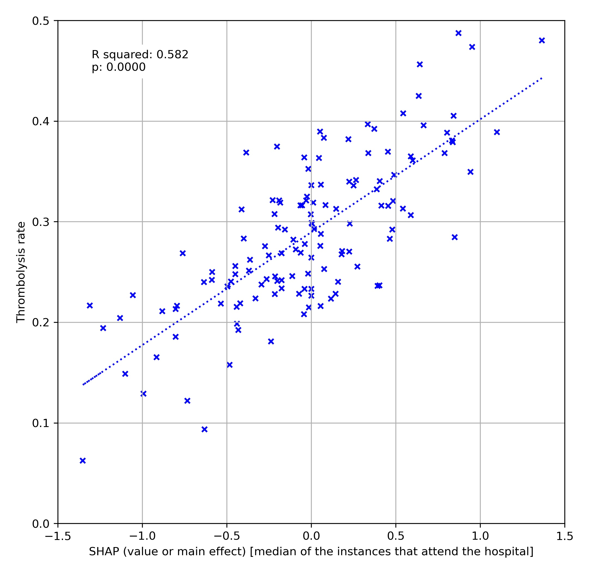
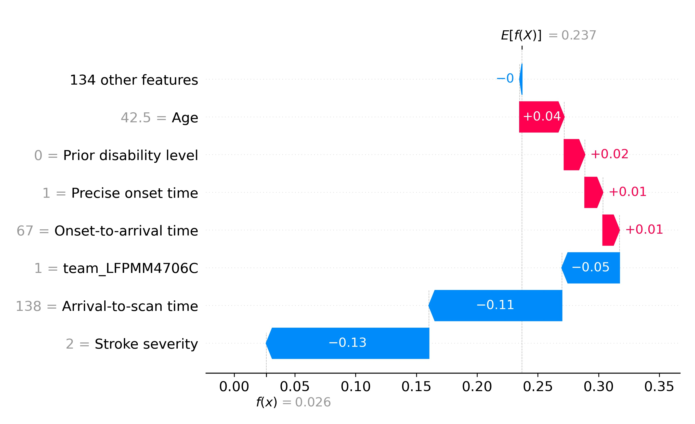

Results
Contents
Results#
Feature selection#
25 features were selected by identifying one feature at a time that led to greatest improvement in Receiver Operating Characteristic (ROC) Area Under Curve (AUC). ROC AUC was measured using stratified 5-fold cross validation.
The best model with 1, 2, 5, 10, 25 & all features (60 features before one-hot encoding of fields) had ROC AUCs of 0.715, 0.792, 0.891, 0.919, 0.923 & 0.922. We selected 10 features for all subsequent work, which were:
Arrival-to-scan time: Time from arrival at hospital to scan (mins)
Infarction: Stroke type (1 = infarction, 0 = haemorrhage)
Stroke severity: Stroke severity (NIHSS) on arrival
Precise onset time: Onset time type (1 = precise, 0 = best estimate)
Prior disability level: Disability level (modified Rankin Scale) before stroke
Stroke team: Stroke team attended
Use of AF anticoagulants: Use of atrial fibrillation anticoagulant (1 = Yes, 0 = No)
Onset-to-arrival time: Time from onset of stroke to arrival at hospital (mins)
Onset during sleep: Did stroke occur in sleep?
Age: Age (as middle of 5 year age bands)
Correlations within the 10 features#
Correlations between the 10 features were measured using coefficients of determination (r-squared). All r-squared were less than 0.15, and all r-squared were less than 0.05 except 1) age and prior disability level (r-squared 0.146), and 2) onset during sleep and precise onset time (r-squared 0.078).
Model accuracy#
Model accuracy was measured using stratified 5-fold cross validation. The key results are shown below.
measurement |
mean |
std |
|---|---|---|
actual positive rate |
0.296 |
0.000 |
actual negative rate |
0.704 |
0.000 |
predicted positive rate |
0.294 |
0.002 |
predicted negative rate |
0.706 |
0.002 |
accuracy |
0.850 |
0.004 |
sensitivity (recall) |
0.743 |
0.004 |
specificity |
0.894 |
0.004 |
precision |
0.747 |
0.007 |
ROC AUC |
0.918 |
0.003 |
Balanced sensitivity/specificity |
0.839 |
0.003 |
The appendix contains results for model validation of hospital thrombolysis curves, evaluation of variation in model prediction using bagging, learning rates, model calibration, and fine-tuning of model regularisation.
Explaining model predictions with SHAP#
Violin plots of SHAP values#
Violin plots show the relationship between feature values and SHAP values for individual patients (the bar in each violin shows the median value). Key observations are:
Stroke type: As expected, the SHAP values for stroke types effectively eliminated any chance of receiving thrombolysis for non-ischaemic (haemorrhagic) stroke.
Arrival-to-scan time: The odds of receiving thrombolysis reduced by about 20 fold over the first 100 minutes of arrival to scan time.
Stroke severity (NIHSS): The odds of receiving thrombolysis was lowest at NIHSS 0, rose and peakws at NIHSS 15-25, and then fell again with higher stroke severity. The difference between minimum odds (at NIHSS 0) and maximum odds (at 15-25) of receiving thrombolysis was 30-35 fold.
Stroke onset time type (precise vs. estimated): The odds of receiving thrombolysis were about 3 fold greater for precise onset time than estimated onset time.
Disability level (Rankin) before stroke. The odds of receiving thrombolysis fell about 5 fold between mRS 0 and 5.
Hospital SHAP values#
When examining SHAP, we take the hospital SHAP values for patients attending each hospital (if we examined the hospital SHAP for all patients, it would be dominated by those not-attending each hospital (i.e. coded zero in the one-hot encoding). When we examine the hospital SHAP values only for patients attending each hospital, the hospital SHAP values ranged from -1.4 to +1.4. This range of SHAP (log odds) represents a 15 fold difference in odds of receiving thrombolysis (most are in the range of -1 to +1, but this still represents a 7-8 fold difference in odds of receiving thrombolysis).
We compared the hospital SHAP value with the observed thrombolysis use at each hospital. Hospital SHAP correlated with observed thrombolysis rate with an r-squared of 0.582, suggesting that 58% (P<0.0001) of the between-hospital variance in thrombolysis use may be explained by the hospitals’ SHAP values, that is the hospitals’ predisposition to use thrombolysis.
When using the 10k cohort, changing the one-hot encoding to mimic all patients attending each of the 132 hospitals, we found that the median hospital SHAP value for the 10k patients correlated very closely with the predicted thrombolysis use in the 10k cohort at each hospital (r-squared = 0.947), confirming that the hospital SHAP is providing a key insight into ahopsital’s propensity to use thrombolysis.
Waterfall plots for individual patient predictions#
Waterfall plots show the influence of features for an individual prediction. We generally handle SHAP values as how they affect log odds of receiving thrombolysis, but for individual predictions, probability plots are more intuitive. The example shown below is for a patient with a low probability of receiving thrombolysis. The model starts with a base prediction of a 24% probability of receiving thrombolysis, before feature values are taken into account. Some features increase that base probability of receiving thrombolysis, those are onet-to-arrival time, having a precise onset time, having no prior disability, and being young. Three features then reduce the probability of receiving thrombolysis: the hospital they attended, the long arrival-to-scan time, and having a mild stroke, with a resulting final probability of receiving thrombolysis of 3%.
